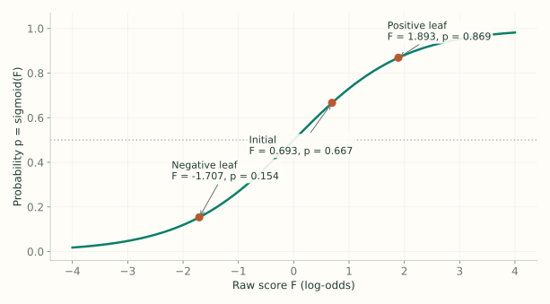
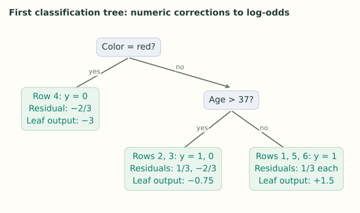

3. Classification: Main Ideas
Notes on StatQuest with Josh Starmer · Gradient Boost Part 3 · 17:03 video. Explanations and redrawn figures follow the lecture’s worked example.
The additive-tree idea stays the same for binary classification. What changes is the scale: trees add to an unconstrained log-odds score $F \in (-\infty,\infty)$, which the sigmoid converts into a valid probability $p \in (0,1)$.
1. Start with the overall class proportion
Video 0:52 ↗| Row | Likes popcorn | Age | Color | Loves Troll 2 ($y$) |
|---|---|---|---|---|
| 1 | Yes | 12 | Blue | 1 |
| 2 | Yes | 87 | Green | 1 |
| 3 | No | 44 | Blue | 0 |
| 4 | Yes | 19 | Red | 0 |
| 5 | No | 32 | Green | 1 |
| 6 | No | 14 | Blue | 1 |
Four of six people love the movie, so the initial probability is $p_0=4/6=2/3$. The model stores its initial prediction as a log-odds score $F_0$ — the natural logarithm of the odds ratio $\frac{p_0}{1-p_0}$ (the ratio of “yes” to “no”):
To convert any log-odds score $F$ back into a probability $p \in (0,1)$, apply the logistic sigmoid function:
At a 0.5 probability threshold, this initial model predicts “yes” for everyone. It has not used anyone’s features yet.
The video often rounds both the score and probability to 0.7. Here we retain $F_0=\log 2$ and $p_0=2/3$, so the two scales stay distinct. This produces slightly different displayed leaf values.

2. Calculate the pseudo-residuals
Video 3:37 ↗A “yes” row has residual $1-2/3=1/3$: increase its predicted probability. A “no” row has residual $0-2/3=-2/3$: decrease it. These numbers measure what the current model still gets wrong.
Fit a regression tree using popcorn preference, age, and color to predict these numeric residuals. The final task is classification, but this tree learns numeric corrections.
3. Calculate corrections on the log-odds scale
Video 5:49 ↗In regression, both the model prediction and the residuals are in the same units (e.g., weight in kg), so a leaf with multiple rows simply outputs their average residual. In classification, however, the ensemble prediction $F$ is a log-odds score while the residuals $r_i = y_i - p_i$ are on the probability scale — so we cannot add raw residuals (or their plain average) directly to $F$.
To convert a leaf $R$’s probability residuals into a log-odds update $\gamma_R$, divide the sum of the residuals in that leaf by the sum of $p_i(1-p_i)$ across the same rows:
Here the numerator accumulates the net probability error in leaf $R$, and each denominator term $p_i(1-p_i)$ is the local slope (curvature) of the sigmoid that translates a probability gap into a log-odds step (derived via a second-order Taylor expansion in Lecture 4).

On the first tree, every row starts at the same probability $p_i = 2/3$, so every row contributes $p_i(1-p_i) = (2/3)(1/3) = 2/9$ to its leaf’s denominator (on later trees, each row has its own updated $p_i$, so $p_i(1-p_i)$ must be evaluated per row before summing):
| Leaf | Residual sum $\sum(y_i-p_i)$ | Denominator sum $\sum p_i(1-p_i)$ | Plugging into $\gamma_R=\dfrac{\sum(y_i-p_i)}{\sum p_i(1-p_i)}$ | Output $\gamma_R$ |
|---|---|---|---|---|
| Red: row 4 | $-2/3$ | $\tfrac{2}{3}(1-\tfrac{2}{3})=2/9$ | $\gamma_R=\dfrac{-2/3}{2/9}$ | $-3$ |
| Not red, age > 37: rows 2, 3 | $1/3-2/3=-1/3$ | $2/9+2/9=4/9$ | $\gamma_R=\dfrac{1/3-2/3}{2/9+2/9}=\dfrac{-1/3}{4/9}$ | $-0.75$ |
| Not red, age ≤ 37: rows 1, 5, 6 | $1/3+1/3+1/3=1$ | $2/9+2/9+2/9=6/9$ | $\gamma_R=\dfrac{1/3+1/3+1/3}{2/9+2/9+2/9}=\dfrac{1}{6/9}$ | $+1.5$ |
- Leaf 1 (Red — row 4): Only row 4 ($y_4=0$, residual $-2/3$) lands here, so there is a single residual in the numerator and a single $2/9$ term in the denominator: $(-2/3) \div (2/9) = -3$.
- Leaf 2 (Not red, age > 37 — rows 2 and 3): Row 2 ($y_2=1$, residual $+1/3$) and row 3 ($y_3=0$, residual $-2/3$) share this leaf. Their residuals partially cancel in the numerator ($1/3 - 2/3 = -1/3$), while the denominator sums $p_i(1-p_i)$ for both rows ($2/9 + 2/9 = 4/9$), giving $(-1/3) \div (4/9) = -0.75$.
- Leaf 3 (Not red, age ≤ 37 — rows 1, 5, and 6): All three rows have $y_i=1$ (residual $+1/3$ each), so the numerator sums to $3 \times (1/3) = 1$ and the denominator sums three $2/9$ terms to $6/9$, giving $1 \div (6/9) = +1.5$.
4. Add to the score, then convert to probability
Video 8:58 ↗Each row’s new log-odds prediction $F_1(x_i)$ starts from the previous score $F_0$ and adds the leaf output $\gamma_R$ scaled by the learning rate $\nu$ ($\nu = 0.8$ in the lecture):
For row 1 (which lands in the $\gamma_R = +1.5$ leaf), plugging in $F_0 = \log 2 \approx 0.6931$ and $\nu = 0.8$ gives:
The probability moves from $0.6667$ toward the true label $1$. Applying $F_1(x_i) = F_0 + 0.8\,\gamma_R(x_i)$ across all three leaves gives:
| Rows | Updated score $F_1 = F_0 + \nu\gamma_R$ | Updated probability $p_1 = \operatorname{sigmoid}(F_1)$ | New residual $y-p_1$ |
|---|---|---|---|
| 1, 5, 6 | $\log 2 + 0.8(+1.5) \approx 1.8931$ | 0.8691 | +0.1309 |
| 2 | $\log 2 + 0.8(-0.75) \approx 0.0931$ | 0.5233 | +0.4767 |
| 3 | $\log 2 + 0.8(-0.75) \approx 0.0931$ | 0.5233 | −0.5233 |
| 4 | $\log 2 + 0.8(-3) \approx -1.7069$ | 0.1536 | −0.1536 |
Rows 2 and 3 share a leaf but have opposite labels. The shared downward correction helps row 3 and hurts row 2. A single tree need not improve every row; the next tree learns from the errors that remain.
5. Classify a new person
Video 14:28 ↗Start at the initial log-odds score $F_0$. Route the new person’s features through every trained tree, multiply each reached leaf output $h_m(x)$ by the learning rate $\nu$, and add everything to obtain the final log-odds score $F_M(x)$:
Apply sigmoid once to $F_M(x)$ to get the predicted probability $p(x)$, then compare $p(x)$ against your chosen classification threshold.
Features → one leaf per tree → add log-odds corrections → sigmoid → class.
The leaf values are neither class votes nor probabilities.